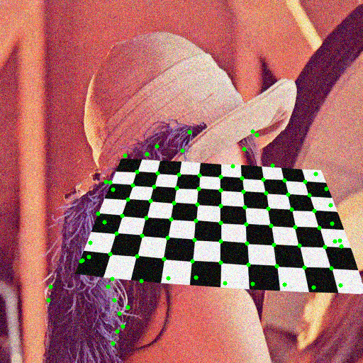
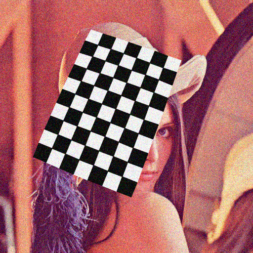

Contents
Lucas-Kanade Optical Flow
A demo of Lukas-Kanade optical flow. It uses camera by default, but you can provide a path to video as an argument.
Sources:
function varargout = lk_demo_gui(varargin)% setup video capture cap = createVideoCapture([], 'chess'); assert(cap.isOpened()); frame = cap.read(); assert(~isempty(frame) && size(frame,3)==3); prev = cv.cvtColor(frame, 'RGB2GRAY'); % create the UI, and hook event handlers h = buildGUI(frame); set(h.fig, 'WindowKeyPressFcn',@onType, ... 'WindowButtonDownFcn',@onMouseDown, ... 'Interruptible','off', 'BusyAction','cancel'); if nargout > 0, varargout{1} = h; end % initialize state pts = []; initCorners = false; nightMode = false; % main loop while ishghandle(h.fig) % get next frame frame = cap.read(); if isempty(frame), break; end next = cv.cvtColor(frame, 'RGB2GRAY'); % black background in night mode if nightMode frame(:) = 0; end if initCorners % automatic points initialization pts = detectPoints(next); initCorners = false; elseif ~isempty(pts) % track points pts = trackPoints(pts, prev, next); % draw points frame = cv.circle(frame, pts, 3, ... 'Color',[0 255 0], 'Thickness','Filled'); end % show output set(h.img, 'CData',frame); drawnow limitrate; % next iteration prev = next; end cap.release(); % release video source
Callback functions
function onMouseDown(~,~) %ONMOUSEDOWN Event handler for mouse down on figure % current mouse location p = get(h.ax, 'CurrentPoint'); p = p(1,1:2) - 1; % check if user clicked close to an existing point if ~isempty(pts) [d,idx] = cv.batchDistance(p, pts, 'K',1); if d <= 5 % remove point pts(idx,:) = []; return; end end % check if we still have room for more points if size(pts,1) <= 300 % add point pts(end+1,:) = p; end end function onType(~,e) %ONTYPE Event handler for key press on figure switch e.Key case 'h' helpdlg({ 'To add/remove points, click with the mouse.' 'Hot keys:' 'h - this help dialog' 'q - quit the program' 'n - switch "night" mode on/off' 'c - clear all the points' 'r - initialize tracking by auto-detecting corners' }); case {'q', 'escape'} close(h.fig); case 'n' nightMode = ~nightMode; case 'c' pts = []; case 'r' initCorners = true; end end
endHelper functions
function pts = detectPoints(gray) %DETECTPOINTS Find and refine corners in image % detect corners pts = cv.goodFeaturesToTrack(gray, ... 'MaxCorners',100, 'QualityLevel',0.01, 'MinDistance',10); if isempty(pts) pts = []; return; end % refine corners pts = cv.cornerSubPix(gray, pts, 'WinSize',[10 10], ... 'Criteria',struct('type','Count+EPS', 'maxCount',20, 'epsilon',0.03)); % return Nx2 matrix of points pts = cat(1, pts{:}); end function pts = trackPoints(pts, prev, next) %TRACKPOINTS Calculate flow of sparse points % calculate sparse optical flow [pts, status] = cv.calcOpticalFlowPyrLK(prev, next, pts, ... 'WinSize',[31 31], 'MinEigThreshold',0.001); % drop points that are not found pts = cat(1, pts{status == 1}); end function h = buildGUI(img) %BUILDGUI Creates the UI % build the user interface (no resizing to keep it simple) sz = size(img); h = struct(); h.fig = figure('Name','LK Demo', 'NumberTitle','off', 'Menubar','none', ... 'Pointer','cross', 'Resize','off', 'Position',[200 200 sz(2) sz(1)]); if ~mexopencv.isOctave() %HACK: not implemented in Octave movegui(h.fig, 'center'); end h.ax = axes('Parent',h.fig, 'Units','normalized', 'Position',[0 0 1 1]); if ~mexopencv.isOctave() h.img = imshow(img, 'Parent',h.ax); else %HACK: https://savannah.gnu.org/bugs/index.php?45473 axes(h.ax); h.img = imshow(img); end end